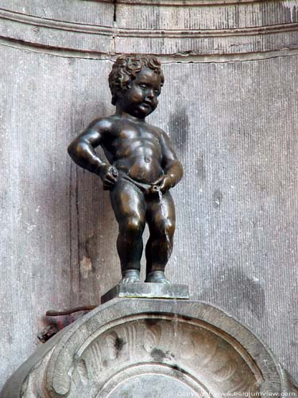
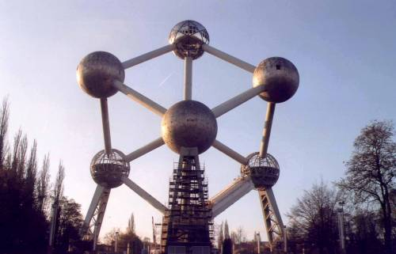

Retour à
l'index
Manneken
Pis
Le Manneken Pis est une statue en bronze qui représente un
petit enfant et qui orne une fontaine baroque sur la
Grand' Place.
Deux légendes circulent sur l'origine de la statue: l' une
raconte
qu'un enfant aurait éteint," en faisant pipi" la mèche
d'une bombe avec
laquelle les ennemis espagnols voulaient mettre le feu à la
ville; une autre
raconte qu'il s'agit d'un enfant perdu et retrouvé
par son père, riche
bourgeois de Bruxelles, dans
la position que l'on imagine. Selon une
ancienne tradition du XVIII siècle, on offre au putto de riches
robes, qui sont maintenant conservées dans le musée
de la ville. La statue originale, qui mesure 61 cm de hauteur, a
été sculptée par Jérôme Duquesnoy en
1619. Celle-ci a été perdue et aujourd'hui on peut en
voir une
copie.
L'Atomium

L'Atomium
a été
bâti à l'occasion de
l'exposition
mondiale de 1958 sur le projet de l'ingénieur Waterkern.
Il mesure 102 m de hauteur et il a été
réalisé en acier et aluminium.
Il est composé de 9 sphères qui ont un
diamètre de 18
m et
qui
représentent les atomes du fer. Elles sont reliées
par
des tubes
(30 m de long) avec à l'intérieur des escaliers
d'accès.
Un restaurant d'où l'on peut admirer un panorama
fantastique se
trouve sur la
plus haute sphère à 92 m. Un autre point de
vue est prévu dans la
troisième sphère inférieure.
Retour
à l'index